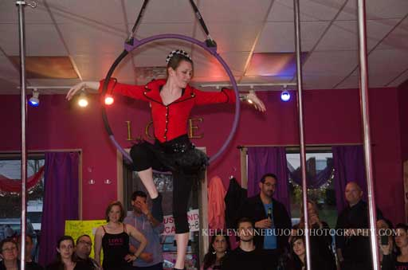
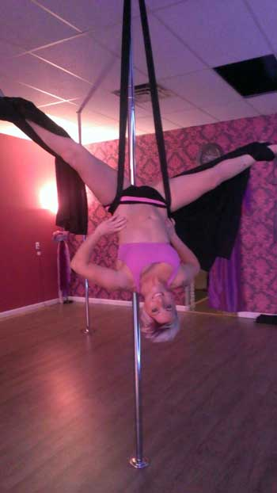

Lyra
The aerial hoop (also known as the lyra) is a circular steel apparatus (resembling a hula hoop) suspended from the ceiling, on which circus artists may perform aerial acrobatics. The hoop sometimes has a hand loop and a bar across the top. It can be used static, spinning, or swinging.

Aerial Silks
Aerial silk is a type of performance in which one or more artists perform aerial acrobatics while hanging from a special fabric. Performers climb the suspended fabric without the use of safety lines, and rely only on their training and skill to ensure safety. They use the fabric to wrap, suspend, fall, swing, and spiral their bodies into and out of various positions. Aerial silks may be used to fly through the air, striking poses and figures while flying.
